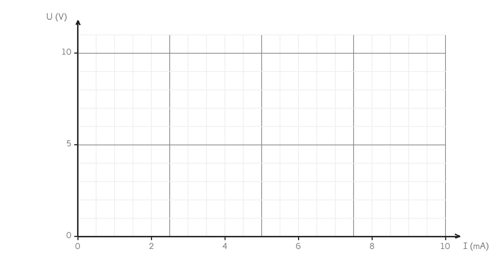

CAP Électricien · 1re année
Les mêmes mesures qu'au poste, mises en graphique : une droite qui part de zéro, et une pente qui a un nom.
2 exercices · 4 items d'entraînement · 1 figure
Savoirs travaillés
| I (mA) | 0 | 2 | 4 | 6 | 8 | 10 |
|---|---|---|---|---|---|---|
| U (V) | 0 | 2 | 4 | 6 | 8 | 10 |

Points alignés, droite passant par l’origine : U et I sont proportionnels. Le coefficient s’appelle la résistance, il se note R et se compte en ohms.
Exercice · CN
Sur la colonne de 2 V, le courant vaut 2 mA. Calculez U ÷ I, avec le courant en ampères.
Série · AA
Exercice · AA
Une deuxième résistance vaut 2 000 Ω. Sa droite monterait-elle plus vite ou moins vite que celle de 1 000 Ω ?
Confondre la pente et la valeur lue. Plus la résistance est grande, plus la droite monte vite — mais le courant, lui, est plus petit pour une même tension.
Ce qu’on faisait en maths avec des prix de séances, on le fait ici avec des volts et des ampères : c’est le même tableau, le même graphique, le même coefficient.
Ce site rappelle la méthode. Aucun corrigé, rien n'est noté.